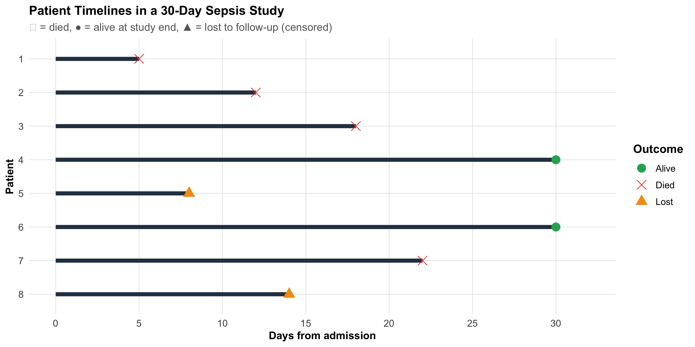
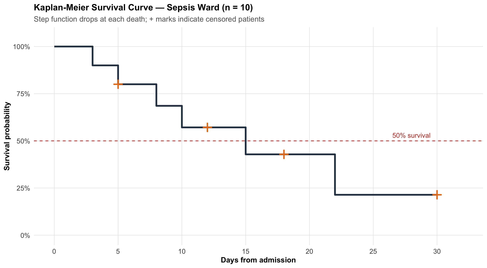
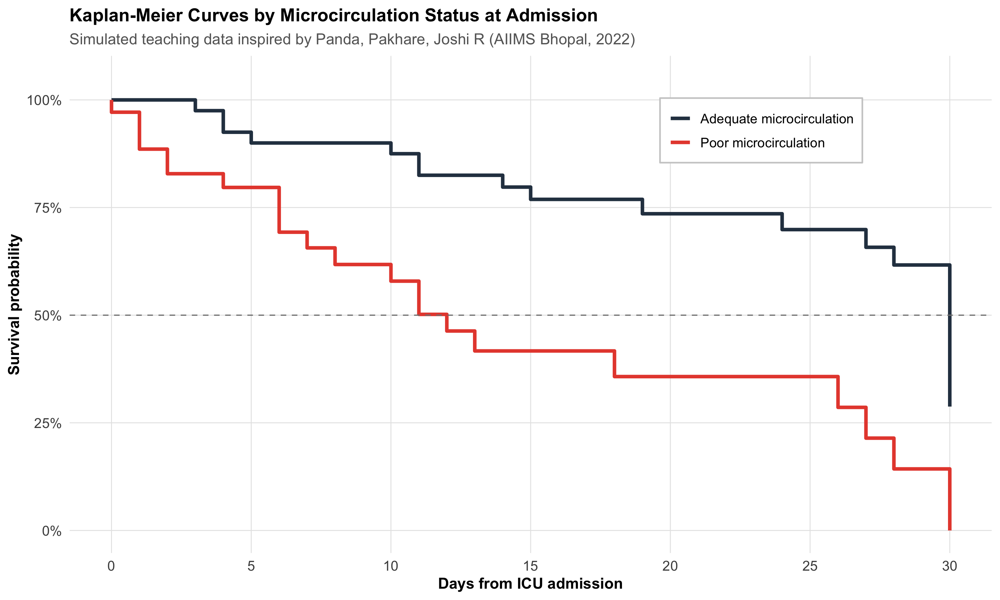
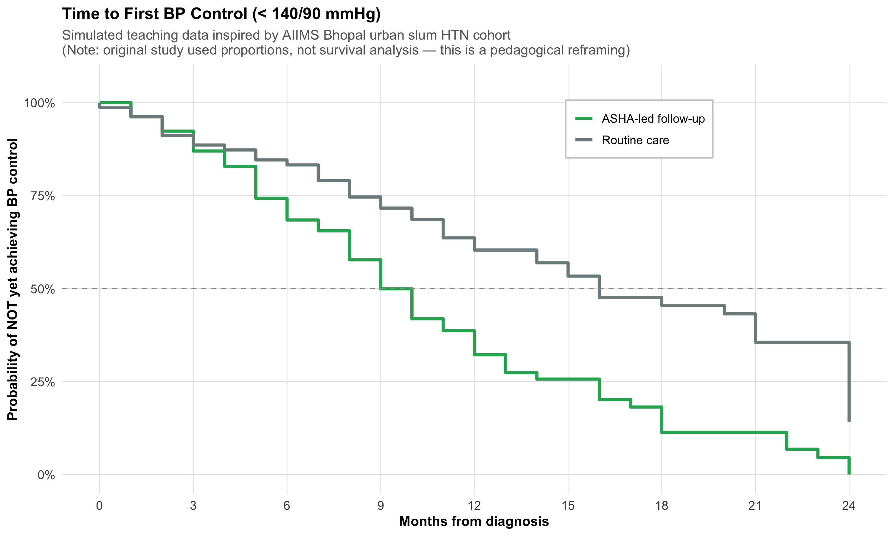
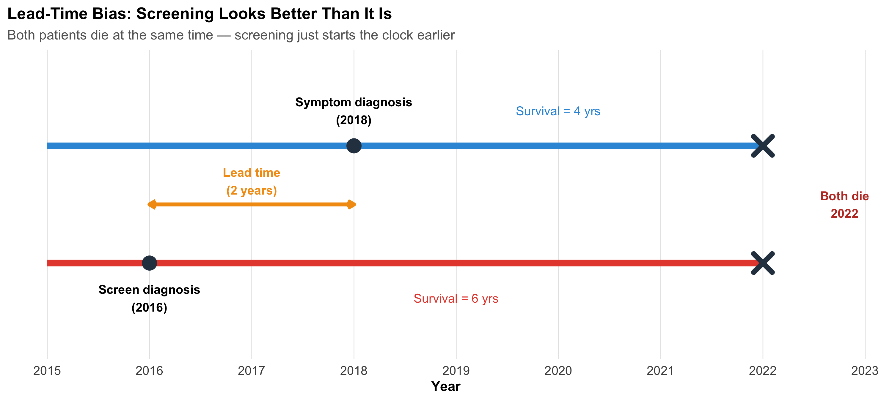

Explain why time-to-event data require special methods and what censoring means
Construct a Kaplan-Meier survival curve step by step
Read and interpret KM curves — median survival, milestone rates, and number-at-risk tables
Compare two survival curves using the log-rank test
Interpret hazard ratios and their 95% confidence intervals
Understand Cox proportional hazards regression for adjusting confounders
Check the proportional hazards assumption
Critically appraise survival analyses in published Indian clinical research
13.2 Clinical Hook
In 2022, a team at AIIMS Bhopal studied whether sublingual microcirculation — the flow in the tiniest blood vessels under the tongue — could predict who would survive sepsis and who would not (Panda, Pakhare, Joshi R et al., Indian J Crit Care Med 2022).
They enrolled patients admitted with suspected infection and measured a parameter called PPV(small) — the proportion of small vessels with visible blood flow — using a handheld video microscope at the bedside, from Day 1 to Day 5.
The clinical question was simple: Does poor microcirculation on admission predict death?
But the analytical challenge was not simple at all:
Some patients died on Day 2; others survived to discharge on Day 15
Some were transferred out or left against medical advice — we don’t know their final outcome
The question isn’t just whether patients died, but when — and how quickly the risk changed
This is a time-to-event problem. Standard tests (t-test, chi-square) cannot handle it. This module teaches you the tools that can.
Reference
Panda A, Revadi G, Sharma JP, Pakhare A, Singhai A, Joshi R. On Admission, Microcirculation Abnormality is an Independent Predictor of Sepsis and Sepsis-related Mortality: A Hospital-based Study. Indian J Crit Care Med 2022;26(3):294–301.
13.3 Part 1: Why Do We Need Survival Analysis?
The Problem with Ordinary Methods
Imagine you conduct a study following 100 sepsis patients for 30 days. At the end:
35 patients died during the study
55 patients survived the full 30 days
10 patients were lost to follow-up — transferred, left AMA, or moved away
What is the mortality rate?
Naïve approach 1: 35/100 = 35% — but this ignores that the 10 lost patients might have died
Naïve approach 2: 35/90 = 38.9% — excluding the lost patients assumes they behave like the remaining ones
Naïve approach 3: Count the lost patients as alive → 35/100 = 35% (underestimates)
Naïve approach 4: Count them as dead → 45/100 = 45% (overestimates)
None of these are satisfactory. The problem is censoring — we have incomplete information about some patients.
What Is Censoring?
A patient is censored when we know they were alive at some time point, but we don’t know their final outcome.
Code
# Simulated patient timelinespatients<-tibble( id =factor(1:8), start =0, end =c(5, 12, 18, 30, 8, 30, 22, 14), event =c("Died", "Died", "Died", "Alive", "Lost", "Alive", "Died", "Lost"), censored =event!="Died")ggplot(patients, aes(y =fct_rev(id)))+geom_segment(aes(x =start, xend =end, yend =fct_rev(id)), linewidth =2, color ="#2c3e50")+geom_point(aes(x =end, shape =event, color =event), size =4)+scale_shape_manual(values =c("Died"=4, "Alive"=16, "Lost"=17))+scale_color_manual(values =c("Died"="#e74c3c", "Alive"="#27ae60", "Lost"="#f39c12"))+scale_x_continuous(breaks =seq(0, 30, 5), limits =c(0, 32))+labs(title ="Patient Timelines in a 30-Day Sepsis Study", subtitle ="✕ = died, ● = alive at study end, ▲ = lost to follow-up (censored)", x ="Days from admission", y ="Patient", shape ="Outcome", color ="Outcome")+theme_clean()+theme(legend.position ="right")

Three types of censoring:
Type
What happens
Example
Right censoring
Patient still alive at last contact
Study ends; patient alive at Day 30
Administrative censoring
Study ends before event
Study closes on a fixed date
Loss to follow-up
Patient drops out
Transferred, left AMA, migrated
The Key Assumption
Censoring must be non-informative — the reason a patient was censored should be unrelated to their risk of the event. If sicker patients are more likely to be lost (e.g., they transfer to another ICU because they’re deteriorating), the analysis is biased.
Time-to-Event Data Structure
Every patient in a survival analysis contributes two pieces of information:
Time — duration from a defined starting point (admission, diagnosis, randomization) to either the event or censoring
Event indicator — did the event (death, relapse, recovery) actually occur? (1 = yes, 0 = censored)
Code
surv_example<-tibble( Patient =1:8, `Days observed` =c(5, 12, 18, 30, 8, 30, 22, 14), `Event (1=died)` =c(1, 1, 1, 0, 0, 0, 1, 0), Status =c("Died Day 5", "Died Day 12", "Died Day 18", "Alive Day 30","Lost Day 8", "Alive Day 30", "Died Day 22", "Lost Day 14"))kable(surv_example, format ="html", align =c("c", "c", "c", "l"))%>%kable_styling(full_width =FALSE, font_size =14)%>%row_spec(0, background ="#2c3e50", color ="white", bold =TRUE)%>%row_spec(which(surv_example$`Event (1=died)`==0), background ="#eaf4e8")
Patient
Days observed
Event (1=died)
Status
1
5
1
Died Day 5
2
12
1
Died Day 12
3
18
1
Died Day 18
4
30
0
Alive Day 30
5
8
0
Lost Day 8
6
30
0
Alive Day 30
7
22
1
Died Day 22
8
14
0
Lost Day 14
Highlighted rows are censored observations — they contribute information (the patient was alive at least until that day) but not the complete story.
13.4 Part 2: The Kaplan-Meier Method
Intuition
The Kaplan-Meier (KM) method answers: What is the probability of surviving beyond time t?
The key insight: at each time point where a death occurs, calculate the conditional probability of surviving that moment, given you were still alive. Then multiply all these conditional probabilities together.
Step-by-Step Calculation
Let’s work through a small example inspired by a sepsis ward. Ten patients are admitted; we track days to death or censoring.
where \(d_i\) = deaths at time \(t_i\), \(n_i\) = number at risk just before \(t_i\).
The KM Curve
Code
# Simulated sepsis ward data (n=10)surv_obj<-Surv( time =c(3, 5, 5, 8, 10, 12, 15, 18, 22, 30), event =c(1, 1, 0, 1, 1, 0, 1, 0, 1, 0))km_fit<-survfit(surv_obj~1)# Manual plot for teachingkm_plot_data<-tibble( time =c(0, km_fit$time), surv =c(1, km_fit$surv), n_risk =c(10, km_fit$n.risk), n_event =c(0, km_fit$n.event), censored =c(0, km_fit$n.censor))# Step functionggplot()+geom_step(data =km_plot_data, aes(x =time, y =surv), linewidth =1.2, color ="#2c3e50")+# Censoring ticksgeom_point(data =km_plot_data%>%filter(censored>0),aes(x =time, y =surv), shape =3, size =3, color ="#e67e22", stroke =1.5)+# Median survival linegeom_hline(yintercept =0.5, linetype ="dashed", color ="#c0392b", linewidth =0.5)+annotate("text", x =28, y =0.53, label ="50% survival", color ="#c0392b", size =3.5)+scale_x_continuous(breaks =seq(0, 30, 5), limits =c(0, 32))+scale_y_continuous(labels =percent_format(), limits =c(0, 1.05))+labs(title ="Kaplan-Meier Survival Curve — Sepsis Ward (n = 10)", subtitle ="Step function drops at each death; + marks indicate censored patients", x ="Days from admission", y ="Survival probability")+theme_clean()

Key features of a KM curve:
Step function (not smooth) — survival drops only when an event occurs
Vertical drops = deaths
Horizontal segments = no events during that interval
+ marks = censored patients (alive at last contact, then removed from the risk set)
Flattening at the right = fewer patients remaining, less information
13.5 Part 3: Reading KM Curves — Median Survival and Milestone Rates
Median Survival Time
The median survival is the time at which S(t) = 0.50 — the point where 50% of patients have experienced the event.
Why Median, Not Mean?
Mean survival is biased when data are censored (we’d need to know all event times). The median only requires that 50% of events have occurred, making it robust to censoring on the right tail.
Milestone Survival Rates
Instead of a single number, we can report survival at specific time points:
30-day survival in sepsis studies
1-year survival after surgery
5-year survival in cancer trials
For example: “30-day survival was 72% (95% CI: 58–83%)” tells you both the estimate and its precision.
Number-at-Risk Table
Published KM curves should always include a number-at-risk table below the curve, showing how many patients remain under observation at key time points. Without this, you cannot judge how reliable the curve is at later time points.
When fewer than 10–15 patients remain at risk, the curve becomes unreliable. Wide confidence bands at the right end of a KM curve are a visual reminder of this uncertainty. Don’t over-interpret late portions of the curve.
13.6 Part 4: Comparing Two Survival Curves — The Log-Rank Test
Clinical Question
Returning to the AIIMS Bhopal sepsis study: patients were classified by microcirculation status on admission — PPV(small) < 80% (poor) vs PPV(small) ≥ 80% (adequate). The question: Do the two groups have different survival?
Let’s simulate a teaching dataset inspired by this study.
Code
# Simulated sepsis data inspired by Panda, Pakhare, Joshi R (2022)# Poor microcirculation group: higher mortality, earlier deathsset.seed(42)n_poor<-35n_adequate<-40poor<-tibble( time =pmin(round(rweibull(n_poor, shape =1.2, scale =15)), 30), event =rbinom(n_poor, 1, 0.7), group ="Poor microcirculation")adequate<-tibble( time =pmin(round(rweibull(n_adequate, shape =1.5, scale =25)), 30), event =rbinom(n_adequate, 1, 0.4), group ="Adequate microcirculation")sepsis_sim<-bind_rows(poor, adequate)%>%mutate(group =factor(group, levels =c("Poor microcirculation", "Adequate microcirculation")))# Fit KM by groupkm_group<-survfit(Surv(time, event)~group, data =sepsis_sim)# Extract data for plottingkm_summary<-summary(km_group)km_df<-tibble( time =km_summary$time, surv =km_summary$surv, group =sub("group=", "", km_summary$strata), n_risk =km_summary$n.risk, n_censor =km_summary$n.censor)# Add time 0km_df<-bind_rows(tibble(time =c(0, 0), surv =c(1, 1), group =c("Poor microcirculation", "Adequate microcirculation"), n_risk =c(n_poor, n_adequate), n_censor =c(0, 0)),km_df)ggplot(km_df, aes(x =time, y =surv, color =group))+geom_step(linewidth =1.2)+scale_color_manual(values =c("Poor microcirculation"="#e74c3c","Adequate microcirculation"="#2c3e50"))+geom_hline(yintercept =0.5, linetype ="dashed", color ="gray50", linewidth =0.4)+scale_x_continuous(breaks =seq(0, 30, 5))+scale_y_continuous(labels =percent_format(), limits =c(0, 1.05))+labs(title ="Kaplan-Meier Curves by Microcirculation Status at Admission", subtitle ="Simulated teaching data inspired by Panda, Pakhare, Joshi R (AIIMS Bhopal, 2022)", x ="Days from ICU admission", y ="Survival probability", color =NULL)+theme_clean()+theme(legend.position =c(0.75, 0.85), legend.background =element_rect(fill ="white", color ="gray80"))

How the Log-Rank Test Works
The log-rank test compares the observed number of deaths in each group with the expected number (if the groups had identical survival).
At each event time \(t_j\):
\[E_{1j} = n_{1j} \times \frac{d_j}{n_j}\]
where \(n_{1j}\) = at-risk in Group 1, \(d_j\) = total deaths, \(n_j\) = total at risk.
Under H₀ (identical survival), this follows a chi-square distribution with 1 df.
Code
lr_test<-survdiff(Surv(time, event)~group, data =sepsis_sim)lr_chi<-round(lr_test$chisq, 2)lr_p<-format.pval(lr_test$pvalue, digits =3)
Code
cat(paste0("::: {.callout-important title=\"Log-Rank Test Result\"}\n","**χ² = ", lr_chi, ", df = 1, p = ", lr_p, "**\n\n","There is a statistically significant difference in survival between patients with poor vs adequate microcirculation on admission.\n",":::\n"))
Log-Rank Test Result
χ² = 16.24, df = 1, p = 5.59e-05
There is a statistically significant difference in survival between patients with poor vs adequate microcirculation on admission.
When to Use the Log-Rank Test
Comparing two or more survival curves
Assumes the proportional hazards assumption holds (the curves don’t cross)
Gives a p-value but no measure of effect size — for that, you need the hazard ratio
13.7 Part 5: Hazard and Hazard Ratios
What Is a Hazard?
The hazard h(t) is the instantaneous rate of the event at time t, given survival up to that point. Think of it as: “Among those still alive right now, what is the risk of dying in the next instant?”
Unlike probability (which is bounded between 0 and 1), hazard is a rate and can exceed 1.
The Hazard Ratio
The hazard ratio (HR) compares hazards between two groups:
Treatment group has lower hazard (better survival)
HR > 1.0
Treatment group has higher hazard (worse survival)
HR = 0.7
Treatment reduces the hazard by 30% at any given time
HR = 1.5
Exposed group has 50% higher hazard at any given time
HR Is Not RR
The hazard ratio superficially resembles relative risk, but they measure different things. RR compares cumulative risks at a fixed time point. HR compares instantaneous rates over the entire follow-up. They converge when event rates are low and follow-up is short, but diverge for common events or long follow-up.
From the AIIMS Bhopal Sepsis Study
In the actual study, the investigators used Cox proportional hazards regression and found:
“Multivariable models indicate the inverse relationship of PPV small with mortality.”
This means: higher PPV(small) → lower hazard of death, after adjusting for clinical severity. A patient with good microcirculation had a significantly lower instantaneous rate of dying compared to one with poor flow.
13.8 Part 6: Cox Proportional Hazards Regression
Why Cox Regression?
The log-rank test tells you whether two groups differ. Cox regression tells you by how much (the HR) and lets you adjust for confounders — just as multiple regression adjusts for confounders with continuous outcomes.
hr_micro<-cox_display$HR[1]ci_micro<-cox_display$`95% CI`[1]hr_sofa<-cox_display$HR[3]ci_sofa<-cox_display$`95% CI`[3]cat(paste0("- **Poor microcirculation:** HR = ", hr_micro, " (95% CI: ", ci_micro,") — after adjusting for age and SOFA, poor microcirculation is associated with a ",round((hr_micro-1)*100), "% ",ifelse(hr_micro>1, "higher", "lower")," hazard of death\n","- **SOFA score:** HR = ", hr_sofa, " (95% CI: ", ci_sofa,") — each additional SOFA point increases the hazard by ",round((hr_sofa-1)*100), "%\n"))
Poor microcirculation: HR = 2.43 (95% CI: 0.97 – 6.06) — after adjusting for age and SOFA, poor microcirculation is associated with a 143% higher hazard of death
SOFA score: HR = 1.08 (95% CI: 0.95 – 1.22) — each additional SOFA point increases the hazard by 8%
Clinical Translation
The Cox model tells you: even after accounting for how sick the patient is (SOFA) and their age, microcirculation status on Day 1 independently predicts mortality. This is exactly what the AIIMS Bhopal study demonstrated.
13.9 Part 7: Checking the Proportional Hazards Assumption
What Does “Proportional” Mean?
The Cox model assumes the hazard ratio is constant over time. If Group A has twice the hazard of Group B at Day 1, it should still have twice the hazard at Day 20.
When Is It Violated?
Curves cross — one group does better early, the other does better late
Treatment effect wears off — HR changes from 0.5 to 1.0 over time
Delayed treatment effect — curves overlap early, then diverge
How to Check
Visual check — log(-log(S(t))) plot:
If the PH assumption holds, the log(-log(S(t))) curves for two groups should be roughly parallel.
Code
# Log-log survival plotkm_group_data<-survfit(Surv(time, event)~group, data =sepsis_sim)# Extract and compute log-logll_data<-tibble( time =km_group_data$time, surv =km_group_data$surv, strata =rep(names(km_group_data$strata), km_group_data$strata))%>%filter(surv>0&surv<1)%>%mutate( log_log =log(-log(surv)), group =sub("group=", "", strata))ggplot(ll_data, aes(x =log(time), y =log_log, color =group))+geom_step(linewidth =1)+scale_color_manual(values =c("Poor microcirculation"="#e74c3c","Adequate microcirculation"="#2c3e50"))+labs(title ="Log-Log Survival Plot — Checking Proportional Hazards", subtitle ="Roughly parallel curves suggest the PH assumption is reasonable", x ="log(time)", y ="log(−log(S(t)))", color =NULL)+theme_clean()
p > 0.05 → no evidence against proportional hazards (assumption is OK)
p < 0.05 → the HR may be changing over time; consider stratified analysis or time-varying covariates
The GLOBAL test checks all variables simultaneously
13.10 Part 8: A Realistic Application — Hypertension Control in Urban Slums
The AIIMS Bhopal team also conducted a landmark cohort study following 6,174 individuals across 16 urban slum clusters in Bhopal, with ASHA workers providing follow-up over 2 years (Pakhare, Joshi A et al., 2023).
Of these, 1,571 (25.4%) had hypertension. The original study used proportions and relative risks — not survival analysis — to assess predictors of BP control.
But let’s ask: What if we reframed this as a time-to-event question? Specifically: How long does it take for a newly diagnosed hypertensive to achieve first BP control (< 140/90) under ASHA-led follow-up?
This is a teaching exercise — the actual study did not use KM curves, but the question is pedagogically valuable.
Code
# Simulated time-to-BP-control data (teaching purposes)# Inspired by the AIIMS Bhopal HTN cohort structureset.seed(123)htn_data<-tibble(# ASHA-led active follow-up arm time_asha =pmin(round(rweibull(80, shape =1.4, scale =10)), 24), event_asha =rbinom(80, 1, 0.75),# Routine care arm time_routine =pmin(round(rweibull(80, shape =1.1, scale =16)), 24), event_routine =rbinom(80, 1, 0.55))htn_long<-bind_rows(tibble(time =htn_data$time_asha, event =htn_data$event_asha, group ="ASHA-led follow-up"),tibble(time =htn_data$time_routine, event =htn_data$event_routine, group ="Routine care"))%>%mutate(group =factor(group, levels =c("ASHA-led follow-up", "Routine care")))km_htn<-survfit(Surv(time, event)~group, data =htn_long)# Extract for plottingkm_htn_summary<-summary(km_htn)km_htn_df<-tibble( time =km_htn_summary$time, surv =km_htn_summary$surv, group =sub("group=", "", km_htn_summary$strata))km_htn_df<-bind_rows(tibble(time =c(0, 0), surv =c(1, 1), group =c("ASHA-led follow-up", "Routine care")),km_htn_df)ggplot(km_htn_df, aes(x =time, y =surv, color =group))+geom_step(linewidth =1.2)+scale_color_manual(values =c("ASHA-led follow-up"="#27ae60", "Routine care"="#7f8c8d"))+geom_hline(yintercept =0.5, linetype ="dashed", color ="gray60", linewidth =0.4)+scale_x_continuous(breaks =seq(0, 24, 3))+scale_y_continuous(labels =percent_format(), limits =c(0, 1.05))+labs(title ="Time to First BP Control (< 140/90 mmHg)", subtitle ="Simulated teaching data inspired by AIIMS Bhopal urban slum HTN cohort\n(Note: original study used proportions, not survival analysis — this is a pedagogical reframing)", x ="Months from diagnosis", y ="Probability of NOT yet achieving BP control", color =NULL)+theme_clean()+theme(legend.position =c(0.7, 0.85), legend.background =element_rect(fill ="white", color ="gray80"))

Pedagogical Note
In this reframing, the “event” is achieving BP control (a good outcome), not death. The y-axis shows the probability of not yet being controlled. A curve that drops faster means quicker control — the opposite interpretation from mortality curves. This flexibility is a strength of survival analysis: the “event” can be anything that happens at a specific time point.
Reference
Pakhare A, Joshi A, et al. Status of Hypertension Control in Urban Slums of Central India: A Community Health Worker-Based Two-Year Follow-Up. Indian J Community Med 2023;48(5):720–726.
13.11 Part 9: Interpreting Published Survival Studies — A Checklist
When you encounter a KM curve in a published paper, systematically assess:
Critical Appraisal Checklist for Survival Analysis
What is the event? Death? Relapse? Progression? A composite endpoint?
What is the time origin? Diagnosis, randomization, surgery?
Are there number-at-risk tables? If not, be skeptical about the curve’s tail
How much censoring? High censoring (> 30%) may introduce bias
Are the curves parallel? If they cross, the HR is misleading — ask for time-specific estimates
Is the HR reported with a 95% CI? An HR without a CI is uninterpretable
Is the median survival reached? If not, milestone rates (e.g., 5-year survival) are more appropriate
Was intention-to-treat analysis used? Especially important for RCTs
What confounders were adjusted for? Unadjusted HR may be confounded
Is the follow-up adequate? A 6-month study cannot assess 5-year survival
An Example of What Can Go Wrong — Lead-Time Bias Revisited
Survival analysis is especially vulnerable to lead-time bias in screening studies. If a cancer screening test detects disease earlier but doesn’t change the time of death, survival appears longer (because the clock starts earlier), even though the patient dies at the same time.
Code
ggplot()+geom_segment(aes(x =2015, xend =2022, y =2, yend =2), linewidth =2.5, color ="#3498db")+geom_segment(aes(x =2015, xend =2022, y =1, yend =1), linewidth =2.5, color ="#e74c3c")+geom_point(aes(x =2018, y =2), size =5, color ="#2c3e50")+geom_point(aes(x =2016, y =1), size =5, color ="#2c3e50")+geom_point(aes(x =2022, y =c(1, 2)), size =5, shape =4, stroke =3, color ="#2c3e50")+annotate("text", x =2018, y =2.3, label ="Symptom diagnosis\n(2018)", fontface ="bold", size =3.5)+annotate("text", x =2016, y =0.7, label ="Screen diagnosis\n(2016)", fontface ="bold", size =3.5)+annotate("text", x =2022.8, y =1.5, label ="Both die\n2022", fontface ="bold", size =3.5, color ="#c0392b")+annotate("segment", x =2016, xend =2018, y =1.5, yend =1.5, linewidth =1.5, color ="#f39c12", arrow =arrow(ends ="both", length =unit(0.2, "cm")))+annotate("text", x =2017, y =1.7, label ="Lead time\n(2 years)", fontface ="bold", size =3.5, color ="#f39c12")+annotate("text", x =2020, y =2.3, label ="Survival = 4 yrs", size =3.5, color ="#3498db")+annotate("text", x =2019, y =0.7, label ="Survival = 6 yrs", size =3.5, color ="#e74c3c")+scale_x_continuous(breaks =2015:2023)+ylim(0.3, 2.7)+labs(title ="Lead-Time Bias: Screening Looks Better Than It Is", subtitle ="Both patients die at the same time — screening just starts the clock earlier", x ="Year", y =NULL)+theme_clean()+theme(axis.text.y =element_blank(), panel.grid.major.y =element_blank())

13.12 Part 10: Beyond Two Groups — Survival Endpoints in Clinical Trials
Types of Survival Endpoints
Different clinical contexts use different “events”:
Endpoint
Event definition
Used in
Overall survival (OS)
Death from any cause
Cancer trials (gold standard)
Disease-free survival (DFS)
Recurrence or death
Adjuvant cancer therapy
Progression-free survival (PFS)
Progression or death
Advanced cancer
Event-free survival (EFS)
Any protocol-defined event
Haematology, cardiology
Time to BP control
First BP < 140/90
Hypertension studies
Time to relapse
Clinical relapse
Psychiatry (e.g., schizophrenia)
From AIIMS Bhopal — Digital Phenotyping and Relapse
The SHARP study (Smartphone Health Assessment for Relapse Prevention) followed schizophrenia patients across three sites including AIIMS Bhopal, using the mindLAMP app to track digital biomarkers. Time-to-relapse was a key endpoint. The study found that smartphone-detected anomalies were 2.12 times more frequent in the month preceding a relapse — suggesting that digital phenotyping could eventually serve as a covariate in Cox models for relapse prediction.
Torous J, … Joshi D, … BJPsych Open 2021; Schizophrenia Research 2023.
Competing Risks
In the sepsis study, a patient could die from:
Sepsis (the event of interest)
Myocardial infarction (a competing risk)
Pulmonary embolism (another competing risk)
Standard KM analysis treats competing events as censored, which overestimates the cumulative incidence of the event of interest. Competing risks methods (cumulative incidence function, Fine-Gray model) handle this correctly — details are beyond this introductory module, but you should know the concept exists.
13.13 Part 11: Common Mistakes in Survival Analysis
Mistakes to Avoid
Ignoring censoring — Using simple proportions (dead/total) instead of KM or Cox
Comparing medians without a formal test — “Median survival was 12 vs 9 months” is not enough; you need a log-rank test or HR with CI
Interpreting HR as RR — HR is an instantaneous rate ratio, not a cumulative risk ratio
Ignoring non-proportional hazards — If curves cross, a single HR is misleading
Over-interpreting the KM tail — When < 10 patients remain at risk, the curve is unreliable
Immortal time bias — Counting time before treatment assignment as treated time (inflates survival)
Using mean survival with censored data — Use median survival instead
Not reporting the number-at-risk table — Every published KM curve should include one
13.14 Part 12: Summary and Key Takeaways
Important
Core Concepts:
Concept
Key Point
Censoring
Incomplete information — patient was alive at last contact but final outcome unknown
Kaplan-Meier
Non-parametric estimate of S(t); step function that drops at each event
Median survival
Time at which S(t) = 0.50; robust to right-censoring
Log-rank test
Compares two or more KM curves; gives p-value but no effect size
Adjusts HR for confounders; assumes proportional hazards
PH assumption
HR constant over time; check with log-log plot or Schoenfeld test
Lead-time bias
Screening starts the clock earlier, inflating apparent survival
Tip
Practical rules:
Always plot the KM curve before computing any test — visual inspection first
Report HR with 95% CI, not just p-values
Include number-at-risk tables in every KM figure
Check proportional hazards before trusting a single HR summary
State the event clearly — death, relapse, recovery, BP control
Use median survival, not mean, when data are censored
Be cautious about the tail of KM curves with few patients remaining
13.15 Practice Questions: NEET PG Style MCQs
Q1: Understanding Censoring
In a 5-year follow-up study of breast cancer survival, a patient is alive at 3 years but then migrates to another state and cannot be contacted. How should this patient’s data be handled?
Code
make_mcq( id ="m12q1", question ="Patient alive at 3 years, then lost to follow-up. How to handle?", options =c("Exclude the patient from analysis entirely"="Wrong — excluding censored patients wastes information and biases results. The patient contributed 3 years of survival information.","Count the patient as dead at 3 years"="Wrong — this overestimates mortality. The patient was alive at 3 years; we simply don't know what happened after.","answer:Censor the patient at 3 years"="Correct! The patient contributes survival information for the first 3 years (alive during that period) and is then removed from the risk set. This is right censoring.","Count the patient as alive for the full 5 years"="Wrong — this underestimates mortality. We cannot assume the patient survived the remaining 2 years."))
Patient alive at 3 years, then lost to follow-up. How to handle?
✘ A. Exclude the patient from analysis entirely — Wrong — excluding censored patients wastes information and biases results. The patient contributed 3 years of survival information.
✘ B. Count the patient as dead at 3 years — Wrong — this overestimates mortality. The patient was alive at 3 years; we simply don’t know what happened after.
✔ C. Censor the patient at 3 years — Correct! The patient contributes survival information for the first 3 years (alive during that period) and is then removed from the risk set. This is right censoring.
✘ D. Count the patient as alive for the full 5 years — Wrong — this underestimates mortality. We cannot assume the patient survived the remaining 2 years.
Q2: Reading a KM Curve
A Kaplan-Meier curve shows that the survival probability at 2 years is 0.65 (95% CI: 0.55–0.75). Which interpretation is correct?
Code
make_mcq( id ="m12q2", question ="KM curve shows S(2 years) = 0.65 (95% CI: 0.55–0.75). Which interpretation?", options =c("65% of patients died within 2 years"="Wrong — S(t) = 0.65 means 65% survived beyond 2 years. 35% experienced the event.","answer:An estimated 65% of patients survived beyond 2 years"="Correct! S(2) = 0.65 means the probability of surviving beyond 2 years is 65%, accounting for censoring. The CI tells us this estimate could plausibly be anywhere from 55% to 75%.","The median survival is 2 years"="Wrong — median survival is the time at which S(t) = 0.50. Here S(2) = 0.65, which is above 0.50, so the median has not yet been reached at 2 years.","The hazard ratio is 0.65"="Wrong — S(t) is a survival probability, not a hazard ratio. These are different quantities entirely."))
KM curve shows S(2 years) = 0.65 (95% CI: 0.55–0.75). Which interpretation?
✘ A. 65% of patients died within 2 years — Wrong — S(t) = 0.65 means 65% survived beyond 2 years. 35% experienced the event.
✔ B. An estimated 65% of patients survived beyond 2 years — Correct! S(2) = 0.65 means the probability of surviving beyond 2 years is 65%, accounting for censoring. The CI tells us this estimate could plausibly be anywhere from 55% to 75%.
✘ C. The median survival is 2 years — Wrong — median survival is the time at which S(t) = 0.50. Here S(2) = 0.65, which is above 0.50, so the median has not yet been reached at 2 years.
✘ D. The hazard ratio is 0.65 — Wrong — S(t) is a survival probability, not a hazard ratio. These are different quantities entirely.
Q3: Hazard Ratio Interpretation
A Cox regression analysis of the AIIMS Bhopal sepsis study reports: HR for poor microcirculation = 2.1 (95% CI: 1.3–3.4, p = 0.003), adjusted for age and SOFA score. Which interpretation is correct?
Code
make_mcq( id ="m12q3", question ="HR = 2.1 (95% CI: 1.3–3.4) for poor microcirculation, adjusted for age and SOFA. Interpretation?", options =c("Patients with poor microcirculation have 2.1 times higher cumulative risk of death"="Wrong — HR is not the same as relative risk. HR = 2.1 means the instantaneous hazard (rate) of death is 2.1 times higher, not the cumulative risk.","answer:At any given time point, patients with poor microcirculation have 2.1 times the instantaneous rate of death compared to those with adequate microcirculation, after adjusting for age and SOFA"="Correct! The HR is an adjusted instantaneous rate ratio. The CI excludes 1.0, confirming statistical significance. The adjustment for age and SOFA means this is an independent effect of microcirculation.","21% of patients with poor microcirculation died"="Wrong — HR = 2.1 is a ratio of hazards, not a percentage. It tells you how much higher the rate is, not the absolute mortality.","Poor microcirculation causes death with a probability of 2.1"="Wrong — probability cannot exceed 1. HR is a rate ratio, not a probability."))
HR = 2.1 (95% CI: 1.3–3.4) for poor microcirculation, adjusted for age and SOFA. Interpretation?
✘ A. Patients with poor microcirculation have 2.1 times higher cumulative risk of death — Wrong — HR is not the same as relative risk. HR = 2.1 means the instantaneous hazard (rate) of death is 2.1 times higher, not the cumulative risk.
✔ B. At any given time point, patients with poor microcirculation have 2.1 times the instantaneous rate of death compared to those with adequate microcirculation, after adjusting for age and SOFA — Correct! The HR is an adjusted instantaneous rate ratio. The CI excludes 1.0, confirming statistical significance. The adjustment for age and SOFA means this is an independent effect of microcirculation.
✘ C. 21% of patients with poor microcirculation died — Wrong — HR = 2.1 is a ratio of hazards, not a percentage. It tells you how much higher the rate is, not the absolute mortality.
✘ D. Poor microcirculation causes death with a probability of 2.1 — Wrong — probability cannot exceed 1. HR is a rate ratio, not a probability.
Q4: Log-Rank Test Applicability
Two Kaplan-Meier curves for treatment A vs B cross at 6 months — A is better early, B is better late. A researcher reports the log-rank test p = 0.42 and concludes “no difference in survival.” What is wrong?
Code
make_mcq( id ="m12q4", question ="KM curves cross at 6 months. Log-rank p = 0.42. Researcher says 'no difference.' What's wrong?", options =c("Nothing is wrong — the log-rank test is the correct test here"="Wrong — the log-rank test assumes proportional hazards. When curves cross, the HR is not constant, and the log-rank test averages over time, potentially missing a real difference.","The p-value is too high to be valid"="Wrong — p = 0.42 is a valid p-value. The issue is that the test is inappropriate when curves cross.","answer:The log-rank test assumes proportional hazards; crossing curves violate this assumption, making the test unreliable"="Correct! When KM curves cross, the treatment effect reverses over time. The log-rank test averages the effect and may show 'no difference' when there is actually a significant early benefit and late harm (or vice versa). Time-specific analyses or restricted mean survival time should be used instead.","The sample size must be too small"="Wrong — the issue is the test choice, not the sample size. Even with a very large sample, the log-rank test is misleading when curves cross."))
KM curves cross at 6 months. Log-rank p = 0.42. Researcher says ‘no difference.’ What’s wrong?
✘ A. Nothing is wrong — the log-rank test is the correct test here — Wrong — the log-rank test assumes proportional hazards. When curves cross, the HR is not constant, and the log-rank test averages over time, potentially missing a real difference.
✘ B. The p-value is too high to be valid — Wrong — p = 0.42 is a valid p-value. The issue is that the test is inappropriate when curves cross.
✔ C. The log-rank test assumes proportional hazards; crossing curves violate this assumption, making the test unreliable — Correct! When KM curves cross, the treatment effect reverses over time. The log-rank test averages the effect and may show ‘no difference’ when there is actually a significant early benefit and late harm (or vice versa). Time-specific analyses or restricted mean survival time should be used instead.
✘ D. The sample size must be too small — Wrong — the issue is the test choice, not the sample size. Even with a very large sample, the log-rank test is misleading when curves cross.
Q5: Proportional Hazards Assumption
A researcher fits a Cox model for a cancer treatment trial. The Schoenfeld residual test yields p = 0.01 for the treatment variable. What should the researcher do?
Code
make_mcq( id ="m12q5", question ="Schoenfeld test p = 0.01 for treatment variable in Cox model. What to do?", options =c("Ignore the test and report the overall HR"="Wrong — p = 0.01 indicates the proportional hazards assumption is violated. Reporting a single HR is misleading because the treatment effect is changing over time.","answer:Report time-specific HRs (e.g., HR for 0–6 months and 6–12 months separately) or use an alternative like restricted mean survival time"="Correct! When PH is violated, the HR varies over time. Splitting the analysis into time windows or using restricted mean survival time (RMST) gives a more honest picture of the treatment effect.","Switch to a t-test comparing mean survival times"="Wrong — a t-test ignores censoring and cannot handle time-to-event data properly.","Increase the sample size until the Schoenfeld test becomes non-significant"="Wrong — increasing n will make the test even more significant if the assumption is truly violated. The issue is model fit, not sample size."))
Schoenfeld test p = 0.01 for treatment variable in Cox model. What to do?
✘ A. Ignore the test and report the overall HR — Wrong — p = 0.01 indicates the proportional hazards assumption is violated. Reporting a single HR is misleading because the treatment effect is changing over time.
✔ B. Report time-specific HRs (e.g., HR for 0–6 months and 6–12 months separately) or use an alternative like restricted mean survival time — Correct! When PH is violated, the HR varies over time. Splitting the analysis into time windows or using restricted mean survival time (RMST) gives a more honest picture of the treatment effect.
✘ C. Switch to a t-test comparing mean survival times — Wrong — a t-test ignores censoring and cannot handle time-to-event data properly.
✘ D. Increase the sample size until the Schoenfeld test becomes non-significant — Wrong — increasing n will make the test even more significant if the assumption is truly violated. The issue is model fit, not sample size.
Q6: Lead-Time Bias
A screening program for oral cancer detects cases 2 years earlier than symptom-based diagnosis. Five-year survival after screen detection is 60%, vs 40% after symptom detection. Can we conclude screening improves survival?
Code
make_mcq( id ="m12q6", question ="Screening detects cancer 2 years earlier. 5-year survival: 60% (screened) vs 40% (symptoms). Does screening improve survival?", options =c("Yes — 60% vs 40% proves screening saves lives"="Wrong — this comparison is subject to lead-time bias. The screened group appears to survive longer simply because diagnosis happened earlier, not because death was delayed.","answer:Not necessarily — the 2-year lead time inflates apparent survival even if screening does not delay death"="Correct! If both groups die at the same calendar time, the screened group has '7-year survival from diagnosis' vs '5-year survival from symptoms' — a 2-year difference entirely due to earlier detection. To prove screening benefit, you need to show reduced mortality in the entire screened population (including those who screen negative), ideally in an RCT.","Yes — because early detection always improves prognosis"="Wrong — early detection of a cancer with no effective treatment (length-time bias) or a cancer that would never progress (overdiagnosis) does not improve prognosis.","No — because 60% is not significantly greater than 40%"="Wrong — the issue is bias, not statistical significance. Even a 'significant' difference could be entirely explained by lead time."))
Screening detects cancer 2 years earlier. 5-year survival: 60% (screened) vs 40% (symptoms). Does screening improve survival?
✘ A. Yes — 60% vs 40% proves screening saves lives — Wrong — this comparison is subject to lead-time bias. The screened group appears to survive longer simply because diagnosis happened earlier, not because death was delayed.
✔ B. Not necessarily — the 2-year lead time inflates apparent survival even if screening does not delay death — Correct! If both groups die at the same calendar time, the screened group has ‘7-year survival from diagnosis’ vs ‘5-year survival from symptoms’ — a 2-year difference entirely due to earlier detection. To prove screening benefit, you need to show reduced mortality in the entire screened population (including those who screen negative), ideally in an RCT.
✘ C. Yes — because early detection always improves prognosis — Wrong — early detection of a cancer with no effective treatment (length-time bias) or a cancer that would never progress (overdiagnosis) does not improve prognosis.
✘ D. No — because 60% is not significantly greater than 40% — Wrong — the issue is bias, not statistical significance. Even a ‘significant’ difference could be entirely explained by lead time.
13.16 Further Learning
Recommended Resources
Textbooks:
Bland M. An Introduction to Medical Statistics, 4th ed. — Chapter on survival analysis is excellent for beginners
Machin D, Cheung YB, Parmar MK. Survival Analysis: A Practical Approach, 2nd ed. — Worked examples with real clinical data
Panda A, Pakhare A, Joshi R et al. (2022) — Microcirculation and sepsis mortality (Cox regression)
Pakhare A, Joshi A et al. (2023) — Hypertension control in urban slums (cohort design)
13.17 References
Source Code
---title: "Survival Analysis — Time-to-Event Data"subtitle: "When the Outcome Is Not Just Whether, But When"description: | Master Kaplan-Meier curves, log-rank tests, and Cox proportional hazards regression. Learn to handle censored data, interpret hazard ratios, and critically appraise survival analyses in published clinical research. Real examples from AIIMS Bhopal sepsis and hypertension research.categories: - Biostatistics - Survival Analysis - Kaplan-Meier - Cox Regression - Hazard Ratiosauthor: "AIIMS Bhopal Biostatistics Course"date: "`r Sys.Date()`"---```{r}#| label: setup#| include: falselibrary(tidyverse)library(kableExtra)source("../R/mcq.R")library(patchwork)library(scales)library(survival)library(broom)set.seed(42)theme_clean <-function() {theme_minimal(base_size =12) +theme(plot.title =element_text(face ="bold", size =13),plot.subtitle =element_text(size =11, color ="gray40"),panel.grid.minor =element_blank(),panel.grid.major =element_line(color ="gray90", linewidth =0.3),axis.text =element_text(size =10),axis.title =element_text(size =11, face ="bold"),legend.position ="bottom",legend.title =element_text(face ="bold") )}```::: {.callout-note appearance="minimal"}**Lecture slides for this module:** [Open Slides](../slides/12-survival-analysis-slides.html){target="_blank"}:::## Learning Objectives {#learning-objectives}By the end of this module, you will be able to:1. **Explain** why time-to-event data require special methods and what censoring means2. **Construct** a Kaplan-Meier survival curve step by step3. **Read and interpret** KM curves — median survival, milestone rates, and number-at-risk tables4. **Compare** two survival curves using the log-rank test5. **Interpret** hazard ratios and their 95% confidence intervals6. **Understand** Cox proportional hazards regression for adjusting confounders7. **Check** the proportional hazards assumption8. **Critically appraise** survival analyses in published Indian clinical research---## Clinical HookIn 2022, a team at **AIIMS Bhopal** studied whether sublingual microcirculation — the flow in the tiniest blood vessels under the tongue — could predict who would survive sepsis and who would not (Panda, Pakhare, Joshi R et al., *Indian J Crit Care Med* 2022).They enrolled patients admitted with suspected infection and measured a parameter called **PPV(small)** — the proportion of small vessels with visible blood flow — using a handheld video microscope at the bedside, from Day 1 to Day 5.The clinical question was simple: **Does poor microcirculation on admission predict death?**But the analytical challenge was not simple at all:- Some patients died on Day 2; others survived to discharge on Day 15- Some were transferred out or left against medical advice — we don't know their final outcome- The question isn't just *whether* patients died, but *when* — and how quickly the risk changedThis is a **time-to-event** problem. Standard tests (t-test, chi-square) cannot handle it. This module teaches you the tools that can.::: {.callout-note title="Reference"}Panda A, Revadi G, Sharma JP, Pakhare A, Singhai A, Joshi R. On Admission, Microcirculation Abnormality is an Independent Predictor of Sepsis and Sepsis-related Mortality: A Hospital-based Study. *Indian J Crit Care Med* 2022;26(3):294–301.:::---## Part 1: Why Do We Need Survival Analysis?### The Problem with Ordinary MethodsImagine you conduct a study following 100 sepsis patients for 30 days. At the end:- 35 patients died during the study- 55 patients survived the full 30 days- 10 patients were **lost to follow-up** — transferred, left AMA, or moved awayWhat is the mortality rate?- **Naïve approach 1:** 35/100 = 35% — but this ignores that the 10 lost patients *might* have died- **Naïve approach 2:** 35/90 = 38.9% — excluding the lost patients *assumes* they behave like the remaining ones- **Naïve approach 3:** Count the lost patients as alive → 35/100 = 35% (underestimates)- **Naïve approach 4:** Count them as dead → 45/100 = 45% (overestimates)None of these are satisfactory. The problem is **censoring** — we have incomplete information about some patients.### What Is Censoring?A patient is **censored** when we know they were alive at some time point, but we don't know their final outcome.```{r}#| label: censoring-diagram#| fig-height: 5#| fig-width: 10# Simulated patient timelinespatients <-tibble(id =factor(1:8),start =0,end =c(5, 12, 18, 30, 8, 30, 22, 14),event =c("Died", "Died", "Died", "Alive", "Lost", "Alive", "Died", "Lost"),censored = event !="Died")ggplot(patients, aes(y =fct_rev(id))) +geom_segment(aes(x = start, xend = end, yend =fct_rev(id)),linewidth =2, color ="#2c3e50") +geom_point(aes(x = end, shape = event, color = event), size =4) +scale_shape_manual(values =c("Died"=4, "Alive"=16, "Lost"=17)) +scale_color_manual(values =c("Died"="#e74c3c", "Alive"="#27ae60", "Lost"="#f39c12")) +scale_x_continuous(breaks =seq(0, 30, 5), limits =c(0, 32)) +labs(title ="Patient Timelines in a 30-Day Sepsis Study",subtitle ="✕ = died, ● = alive at study end, ▲ = lost to follow-up (censored)",x ="Days from admission", y ="Patient", shape ="Outcome", color ="Outcome") +theme_clean() +theme(legend.position ="right")```**Three types of censoring:**| Type | What happens | Example ||---|---|---|| **Right censoring** | Patient still alive at last contact | Study ends; patient alive at Day 30 || **Administrative censoring** | Study ends before event | Study closes on a fixed date || **Loss to follow-up** | Patient drops out | Transferred, left AMA, migrated |::: {.callout-important title="The Key Assumption"}Censoring must be **non-informative** — the reason a patient was censored should be unrelated to their risk of the event. If sicker patients are more likely to be lost (e.g., they transfer to another ICU because they're deteriorating), the analysis is biased.:::### Time-to-Event Data StructureEvery patient in a survival analysis contributes two pieces of information:1. **Time** — duration from a defined starting point (admission, diagnosis, randomization) to either the event or censoring2. **Event indicator** — did the event (death, relapse, recovery) actually occur? (1 = yes, 0 = censored)```{r}#| label: data-structure#| results: asissurv_example <-tibble(Patient =1:8,`Days observed`=c(5, 12, 18, 30, 8, 30, 22, 14),`Event (1=died)`=c(1, 1, 1, 0, 0, 0, 1, 0),Status =c("Died Day 5", "Died Day 12", "Died Day 18", "Alive Day 30","Lost Day 8", "Alive Day 30", "Died Day 22", "Lost Day 14"))kable(surv_example, format ="html", align =c("c", "c", "c", "l")) %>%kable_styling(full_width =FALSE, font_size =14) %>%row_spec(0, background ="#2c3e50", color ="white", bold =TRUE) %>%row_spec(which(surv_example$`Event (1=died)`==0), background ="#eaf4e8")```Highlighted rows are **censored observations** — they contribute information (the patient was alive *at least* until that day) but not the complete story.---## Part 2: The Kaplan-Meier Method### IntuitionThe Kaplan-Meier (KM) method answers: **What is the probability of surviving beyond time t?**The key insight: at each time point where a death occurs, calculate the conditional probability of surviving *that* moment, given you were still alive. Then multiply all these conditional probabilities together.### Step-by-Step CalculationLet's work through a small example inspired by a sepsis ward. Ten patients are admitted; we track days to death or censoring.```{r}#| label: km-calculation#| results: asiskm_data <-tibble(Patient =1:10,Days =c(3, 5, 5, 8, 10, 12, 15, 18, 22, 30),Event =c(1, 1, 0, 1, 1, 0, 1, 0, 1, 0))# KM calculation tablekm_table <-tibble(`Time (days)`=c(3, 5, 8, 10, 15, 22),`At risk (nᵢ)`=c(10, 8, 6, 5, 3, 2),`Deaths (dᵢ)`=c(1, 1, 1, 1, 1, 1),`Censored before next`=c(0, 1, 0, 0, 1, 1),`P(survive this time)`=c("9/10 = 0.900", "7/8 = 0.875", "5/6 = 0.833","4/5 = 0.800", "2/3 = 0.667", "1/2 = 0.500"),`S(t)`=c("0.900", "0.900 × 0.875 = 0.788", "0.788 × 0.833 = 0.656","0.656 × 0.800 = 0.525", "0.525 × 0.667 = 0.350", "0.350 × 0.500 = 0.175"))kable(km_table, format ="html", align =c("c", "c", "c", "c", "l", "l")) %>%kable_styling(full_width =TRUE, font_size =13) %>%row_spec(0, background ="#2c3e50", color ="white", bold =TRUE)```**Reading the table:**- At Day 3, all 10 patients are at risk. One dies. P(survive Day 3) = 9/10 = 0.90- By Day 5, one patient was censored, so only 8 are at risk. One dies. P(survive Day 5 | survived to Day 5) = 7/8- Cumulative: S(5) = 0.90 × 0.875 = 0.788 — meaning 78.8% probability of surviving beyond Day 5**The formula:**$$S(t) = \prod_{t_i \leq t} \left(1 - \frac{d_i}{n_i}\right)$$where $d_i$ = deaths at time $t_i$, $n_i$ = number at risk just before $t_i$.### The KM Curve```{r}#| label: km-curve-basic#| fig-height: 5.5#| fig-width: 10# Simulated sepsis ward data (n=10)surv_obj <-Surv(time =c(3, 5, 5, 8, 10, 12, 15, 18, 22, 30),event =c(1, 1, 0, 1, 1, 0, 1, 0, 1, 0))km_fit <-survfit(surv_obj ~1)# Manual plot for teachingkm_plot_data <-tibble(time =c(0, km_fit$time),surv =c(1, km_fit$surv),n_risk =c(10, km_fit$n.risk),n_event =c(0, km_fit$n.event),censored =c(0, km_fit$n.censor))# Step functionggplot() +geom_step(data = km_plot_data, aes(x = time, y = surv),linewidth =1.2, color ="#2c3e50") +# Censoring ticksgeom_point(data = km_plot_data %>%filter(censored >0),aes(x = time, y = surv), shape =3, size =3, color ="#e67e22", stroke =1.5) +# Median survival linegeom_hline(yintercept =0.5, linetype ="dashed", color ="#c0392b", linewidth =0.5) +annotate("text", x =28, y =0.53, label ="50% survival", color ="#c0392b", size =3.5) +scale_x_continuous(breaks =seq(0, 30, 5), limits =c(0, 32)) +scale_y_continuous(labels =percent_format(), limits =c(0, 1.05)) +labs(title ="Kaplan-Meier Survival Curve — Sepsis Ward (n = 10)",subtitle ="Step function drops at each death; + marks indicate censored patients",x ="Days from admission", y ="Survival probability") +theme_clean()```**Key features of a KM curve:**- **Step function** (not smooth) — survival drops only when an event occurs- **Vertical drops** = deaths- **Horizontal segments** = no events during that interval- **+ marks** = censored patients (alive at last contact, then removed from the risk set)- **Flattening at the right** = fewer patients remaining, less information---## Part 3: Reading KM Curves — Median Survival and Milestone Rates### Median Survival TimeThe **median survival** is the time at which S(t) = 0.50 — the point where 50% of patients have experienced the event.::: {.callout-tip title="Why Median, Not Mean?"}Mean survival is biased when data are censored (we'd need to know *all* event times). The median only requires that 50% of events have occurred, making it robust to censoring on the right tail.:::### Milestone Survival RatesInstead of a single number, we can report survival at specific time points:- **30-day survival** in sepsis studies- **1-year survival** after surgery- **5-year survival** in cancer trialsFor example: "30-day survival was 72% (95% CI: 58–83%)" tells you both the estimate and its precision.### Number-at-Risk TablePublished KM curves should always include a **number-at-risk table** below the curve, showing how many patients remain under observation at key time points. Without this, you cannot judge how reliable the curve is at later time points.```{r}#| label: number-at-risk#| results: asisnar <-tibble(`Time (days)`=c(0, 5, 10, 15, 20, 25, 30),`At risk`=c(10, 8, 5, 3, 2, 1, 1))kable(nar, format ="html", align ="c") %>%kable_styling(full_width =FALSE, font_size =14) %>%row_spec(0, background ="#2c3e50", color ="white", bold =TRUE)```::: {.callout-warning title="Watch the Tail"}When fewer than 10–15 patients remain at risk, the curve becomes unreliable. Wide confidence bands at the right end of a KM curve are a visual reminder of this uncertainty. Don't over-interpret late portions of the curve.:::---## Part 4: Comparing Two Survival Curves — The Log-Rank Test### Clinical QuestionReturning to the AIIMS Bhopal sepsis study: patients were classified by microcirculation status on admission — **PPV(small) < 80%** (poor) vs **PPV(small) ≥ 80%** (adequate). The question: **Do the two groups have different survival?**Let's simulate a teaching dataset inspired by this study.```{r}#| label: logrank-data#| fig-height: 6#| fig-width: 10# Simulated sepsis data inspired by Panda, Pakhare, Joshi R (2022)# Poor microcirculation group: higher mortality, earlier deathsset.seed(42)n_poor <-35n_adequate <-40poor <-tibble(time =pmin(round(rweibull(n_poor, shape =1.2, scale =15)), 30),event =rbinom(n_poor, 1, 0.7),group ="Poor microcirculation")adequate <-tibble(time =pmin(round(rweibull(n_adequate, shape =1.5, scale =25)), 30),event =rbinom(n_adequate, 1, 0.4),group ="Adequate microcirculation")sepsis_sim <-bind_rows(poor, adequate) %>%mutate(group =factor(group, levels =c("Poor microcirculation", "Adequate microcirculation")))# Fit KM by groupkm_group <-survfit(Surv(time, event) ~ group, data = sepsis_sim)# Extract data for plottingkm_summary <-summary(km_group)km_df <-tibble(time = km_summary$time,surv = km_summary$surv,group =sub("group=", "", km_summary$strata),n_risk = km_summary$n.risk,n_censor = km_summary$n.censor)# Add time 0km_df <-bind_rows(tibble(time =c(0, 0),surv =c(1, 1),group =c("Poor microcirculation", "Adequate microcirculation"),n_risk =c(n_poor, n_adequate),n_censor =c(0, 0)), km_df)ggplot(km_df, aes(x = time, y = surv, color = group)) +geom_step(linewidth =1.2) +scale_color_manual(values =c("Poor microcirculation"="#e74c3c","Adequate microcirculation"="#2c3e50")) +geom_hline(yintercept =0.5, linetype ="dashed", color ="gray50", linewidth =0.4) +scale_x_continuous(breaks =seq(0, 30, 5)) +scale_y_continuous(labels =percent_format(), limits =c(0, 1.05)) +labs(title ="Kaplan-Meier Curves by Microcirculation Status at Admission",subtitle ="Simulated teaching data inspired by Panda, Pakhare, Joshi R (AIIMS Bhopal, 2022)",x ="Days from ICU admission", y ="Survival probability",color =NULL) +theme_clean() +theme(legend.position =c(0.75, 0.85),legend.background =element_rect(fill ="white", color ="gray80"))```### How the Log-Rank Test WorksThe log-rank test compares the **observed** number of deaths in each group with the **expected** number (if the groups had identical survival).At each event time $t_j$:$$E_{1j} = n_{1j} \times \frac{d_j}{n_j}$$where $n_{1j}$ = at-risk in Group 1, $d_j$ = total deaths, $n_j$ = total at risk.The test statistic sums these differences:$$\chi^2 = \frac{\left(\sum O_{1j} - \sum E_{1j}\right)^2}{\sum V_j}$$Under H₀ (identical survival), this follows a chi-square distribution with 1 df.```{r}#| label: logrank-testlr_test <-survdiff(Surv(time, event) ~ group, data = sepsis_sim)lr_chi <-round(lr_test$chisq, 2)lr_p <-format.pval(lr_test$pvalue, digits =3)``````{r}#| label: logrank-result#| results: asiscat(paste0("::: {.callout-important title=\"Log-Rank Test Result\"}\n","**χ² = ", lr_chi, ", df = 1, p = ", lr_p, "**\n\n","There is a statistically significant difference in survival between patients with poor vs adequate microcirculation on admission.\n",":::\n"))```::: {.callout-note title="When to Use the Log-Rank Test"}- Comparing **two or more** survival curves- Assumes the **proportional hazards** assumption holds (the curves don't cross)- Gives a p-value but **no measure of effect size** — for that, you need the hazard ratio:::---## Part 5: Hazard and Hazard Ratios### What Is a Hazard?The **hazard** h(t) is the instantaneous rate of the event at time t, given survival up to that point. Think of it as: "Among those still alive right now, what is the risk of dying in the next instant?"Unlike probability (which is bounded between 0 and 1), hazard is a **rate** and can exceed 1.### The Hazard RatioThe **hazard ratio (HR)** compares hazards between two groups:$$HR = \frac{h_{\text{treatment}}(t)}{h_{\text{control}}(t)}$$| HR value | Interpretation ||---|---|| HR = 1.0 | No difference in hazard between groups || HR < 1.0 | Treatment group has **lower** hazard (better survival) || HR > 1.0 | Treatment group has **higher** hazard (worse survival) || HR = 0.7 | Treatment reduces the hazard by 30% at any given time || HR = 1.5 | Exposed group has 50% higher hazard at any given time |::: {.callout-warning title="HR Is Not RR"}The hazard ratio superficially resembles relative risk, but they measure different things. RR compares cumulative risks at a fixed time point. HR compares instantaneous rates over the entire follow-up. They converge when event rates are low and follow-up is short, but diverge for common events or long follow-up.:::### From the AIIMS Bhopal Sepsis StudyIn the actual study, the investigators used **Cox proportional hazards regression** and found:> *"Multivariable models indicate the inverse relationship of PPV small with mortality."*This means: **higher PPV(small) → lower hazard of death**, after adjusting for clinical severity. A patient with good microcirculation had a significantly lower instantaneous rate of dying compared to one with poor flow.---## Part 6: Cox Proportional Hazards Regression### Why Cox Regression?The log-rank test tells you *whether* two groups differ. Cox regression tells you *by how much* (the HR) and lets you **adjust for confounders** — just as multiple regression adjusts for confounders with continuous outcomes.### The Cox Model$$h(t) = h_0(t) \times \exp(\beta_1 x_1 + \beta_2 x_2 + \cdots + \beta_p x_p)$$where:- $h_0(t)$ is the **baseline hazard** (not estimated — this is the "semi-parametric" part)- $\beta_i$ are coefficients; $\exp(\beta_i)$ = hazard ratio for variable $x_i$- The model assumes the HR is **constant over time** (proportional hazards)### Worked Example: Sepsis Mortality PredictorsLet's build a Cox model on our simulated sepsis teaching data, adding age and SOFA score as confounders.```{r}#| label: cox-model#| results: asis# Add simulated confoundersset.seed(42)sepsis_sim <- sepsis_sim %>%mutate(age =round(rnorm(n(), mean =55, sd =14)),sofa =round(pmax(2, pmin(20, rnorm(n(), mean =ifelse(group =="Poor microcirculation", 10, 7), sd =3)))),micro_poor =as.numeric(group =="Poor microcirculation") )# Fit Cox modelcox_fit <-coxph(Surv(time, event) ~ micro_poor + age + sofa, data = sepsis_sim)cox_tidy <-tidy(cox_fit, exponentiate =TRUE, conf.int =TRUE)cox_display <- cox_tidy %>%transmute(Variable =c("Poor microcirculation (vs adequate)", "Age (per year)", "SOFA score (per point)"),HR =round(estimate, 2),`95% CI`=paste0(round(conf.low, 2), " – ", round(conf.high, 2)),`p-value`=ifelse(p.value <0.001, "< 0.001", round(p.value, 3)) )kable(cox_display, format ="html", align =c("l", "c", "c", "c")) %>%kable_styling(full_width =FALSE, font_size =14) %>%row_spec(0, background ="#2c3e50", color ="white", bold =TRUE)```**Interpreting the output:**```{r}#| label: cox-interpretation#| results: asishr_micro <- cox_display$HR[1]ci_micro <- cox_display$`95% CI`[1]hr_sofa <- cox_display$HR[3]ci_sofa <- cox_display$`95% CI`[3]cat(paste0("- **Poor microcirculation:** HR = ", hr_micro, " (95% CI: ", ci_micro,") — after adjusting for age and SOFA, poor microcirculation is associated with a ",round((hr_micro -1) *100), "% ",ifelse(hr_micro >1, "higher", "lower")," hazard of death\n","- **SOFA score:** HR = ", hr_sofa, " (95% CI: ", ci_sofa,") — each additional SOFA point increases the hazard by ",round((hr_sofa -1) *100), "%\n"))```::: {.callout-tip title="Clinical Translation"}The Cox model tells you: even after accounting for how sick the patient is (SOFA) and their age, microcirculation status on Day 1 independently predicts mortality. This is exactly what the AIIMS Bhopal study demonstrated.:::---## Part 7: Checking the Proportional Hazards Assumption### What Does "Proportional" Mean?The Cox model assumes the **hazard ratio is constant over time**. If Group A has twice the hazard of Group B at Day 1, it should still have twice the hazard at Day 20.### When Is It Violated?- **Curves cross** — one group does better early, the other does better late- **Treatment effect wears off** — HR changes from 0.5 to 1.0 over time- **Delayed treatment effect** — curves overlap early, then diverge### How to Check**Visual check — log(-log(S(t))) plot:**If the PH assumption holds, the log(-log(S(t))) curves for two groups should be roughly **parallel**.```{r}#| label: ph-check#| fig-height: 5#| fig-width: 10# Log-log survival plotkm_group_data <-survfit(Surv(time, event) ~ group, data = sepsis_sim)# Extract and compute log-logll_data <-tibble(time = km_group_data$time,surv = km_group_data$surv,strata =rep(names(km_group_data$strata), km_group_data$strata)) %>%filter(surv >0& surv <1) %>%mutate(log_log =log(-log(surv)),group =sub("group=", "", strata) )ggplot(ll_data, aes(x =log(time), y = log_log, color = group)) +geom_step(linewidth =1) +scale_color_manual(values =c("Poor microcirculation"="#e74c3c","Adequate microcirculation"="#2c3e50")) +labs(title ="Log-Log Survival Plot — Checking Proportional Hazards",subtitle ="Roughly parallel curves suggest the PH assumption is reasonable",x ="log(time)", y ="log(−log(S(t)))", color =NULL) +theme_clean()```**Statistical check — Schoenfeld residuals:**```{r}#| label: schoenfeld-test#| results: asisph_test <-cox.zph(cox_fit)ph_df <-tibble(Variable =c("Poor microcirculation", "Age", "SOFA score", "GLOBAL"),`Chi-square`=round(ph_test$table[, "chisq"], 2),`p-value`=round(ph_test$table[, "p"], 3))kable(ph_df, format ="html", align =c("l", "c", "c")) %>%kable_styling(full_width =FALSE, font_size =14) %>%row_spec(0, background ="#2c3e50", color ="white", bold =TRUE)```::: {.callout-note title="Interpreting the PH Test"}- p > 0.05 → no evidence against proportional hazards (assumption is OK)- p < 0.05 → the HR may be changing over time; consider stratified analysis or time-varying covariates- The GLOBAL test checks all variables simultaneously:::---## Part 8: A Realistic Application — Hypertension Control in Urban SlumsThe AIIMS Bhopal team also conducted a landmark cohort study following **6,174 individuals** across 16 urban slum clusters in Bhopal, with ASHA workers providing follow-up over 2 years (Pakhare, Joshi A et al., 2023).Of these, 1,571 (25.4%) had hypertension. The original study used proportions and relative risks — not survival analysis — to assess predictors of BP control.But let's ask: **What if we reframed this as a time-to-event question?** Specifically: *How long does it take for a newly diagnosed hypertensive to achieve first BP control (< 140/90) under ASHA-led follow-up?*This is a teaching exercise — the actual study did not use KM curves, but the question is pedagogically valuable.```{r}#| label: htn-simulation#| fig-height: 6#| fig-width: 10# Simulated time-to-BP-control data (teaching purposes)# Inspired by the AIIMS Bhopal HTN cohort structureset.seed(123)htn_data <-tibble(# ASHA-led active follow-up armtime_asha =pmin(round(rweibull(80, shape =1.4, scale =10)), 24),event_asha =rbinom(80, 1, 0.75),# Routine care armtime_routine =pmin(round(rweibull(80, shape =1.1, scale =16)), 24),event_routine =rbinom(80, 1, 0.55))htn_long <-bind_rows(tibble(time = htn_data$time_asha, event = htn_data$event_asha, group ="ASHA-led follow-up"),tibble(time = htn_data$time_routine, event = htn_data$event_routine, group ="Routine care")) %>%mutate(group =factor(group, levels =c("ASHA-led follow-up", "Routine care")))km_htn <-survfit(Surv(time, event) ~ group, data = htn_long)# Extract for plottingkm_htn_summary <-summary(km_htn)km_htn_df <-tibble(time = km_htn_summary$time,surv = km_htn_summary$surv,group =sub("group=", "", km_htn_summary$strata))km_htn_df <-bind_rows(tibble(time =c(0, 0), surv =c(1, 1),group =c("ASHA-led follow-up", "Routine care")), km_htn_df)ggplot(km_htn_df, aes(x = time, y = surv, color = group)) +geom_step(linewidth =1.2) +scale_color_manual(values =c("ASHA-led follow-up"="#27ae60", "Routine care"="#7f8c8d")) +geom_hline(yintercept =0.5, linetype ="dashed", color ="gray60", linewidth =0.4) +scale_x_continuous(breaks =seq(0, 24, 3)) +scale_y_continuous(labels =percent_format(), limits =c(0, 1.05)) +labs(title ="Time to First BP Control (< 140/90 mmHg)",subtitle ="Simulated teaching data inspired by AIIMS Bhopal urban slum HTN cohort\n(Note: original study used proportions, not survival analysis — this is a pedagogical reframing)",x ="Months from diagnosis", y ="Probability of NOT yet achieving BP control",color =NULL) +theme_clean() +theme(legend.position =c(0.7, 0.85),legend.background =element_rect(fill ="white", color ="gray80"))```::: {.callout-note title="Pedagogical Note"}In this reframing, the "event" is **achieving BP control** (a good outcome), not death. The y-axis shows the probability of *not yet* being controlled. A curve that drops faster means quicker control — the opposite interpretation from mortality curves. This flexibility is a strength of survival analysis: the "event" can be anything that happens at a specific time point.:::::: {.callout-note title="Reference"}Pakhare A, Joshi A, et al. Status of Hypertension Control in Urban Slums of Central India: A Community Health Worker-Based Two-Year Follow-Up. *Indian J Community Med* 2023;48(5):720–726.:::---## Part 9: Interpreting Published Survival Studies — A ChecklistWhen you encounter a KM curve in a published paper, systematically assess:::::{.callout-important title="Critical Appraisal Checklist for Survival Analysis"}1. **What is the event?** Death? Relapse? Progression? A composite endpoint?2. **What is the time origin?** Diagnosis, randomization, surgery?3. **Are there number-at-risk tables?** If not, be skeptical about the curve's tail4. **How much censoring?** High censoring (> 30%) may introduce bias5. **Are the curves parallel?** If they cross, the HR is misleading — ask for time-specific estimates6. **Is the HR reported with a 95% CI?** An HR without a CI is uninterpretable7. **Is the median survival reached?** If not, milestone rates (e.g., 5-year survival) are more appropriate8. **Was intention-to-treat analysis used?** Especially important for RCTs9. **What confounders were adjusted for?** Unadjusted HR may be confounded10. **Is the follow-up adequate?** A 6-month study cannot assess 5-year survival::::### An Example of What Can Go Wrong — Lead-Time Bias RevisitedSurvival analysis is especially vulnerable to **lead-time bias** in screening studies. If a cancer screening test detects disease earlier but doesn't change the time of death, survival *appears* longer (because the clock starts earlier), even though the patient dies at the same time.```{r}#| label: lead-time#| fig-height: 4.5#| fig-width: 10ggplot() +geom_segment(aes(x =2015, xend =2022, y =2, yend =2), linewidth =2.5, color ="#3498db") +geom_segment(aes(x =2015, xend =2022, y =1, yend =1), linewidth =2.5, color ="#e74c3c") +geom_point(aes(x =2018, y =2), size =5, color ="#2c3e50") +geom_point(aes(x =2016, y =1), size =5, color ="#2c3e50") +geom_point(aes(x =2022, y =c(1, 2)), size =5, shape =4, stroke =3, color ="#2c3e50") +annotate("text", x =2018, y =2.3, label ="Symptom diagnosis\n(2018)", fontface ="bold", size =3.5) +annotate("text", x =2016, y =0.7, label ="Screen diagnosis\n(2016)", fontface ="bold", size =3.5) +annotate("text", x =2022.8, y =1.5, label ="Both die\n2022", fontface ="bold", size =3.5, color ="#c0392b") +annotate("segment", x =2016, xend =2018, y =1.5, yend =1.5, linewidth =1.5, color ="#f39c12",arrow =arrow(ends ="both", length =unit(0.2, "cm"))) +annotate("text", x =2017, y =1.7, label ="Lead time\n(2 years)", fontface ="bold", size =3.5, color ="#f39c12") +annotate("text", x =2020, y =2.3, label ="Survival = 4 yrs", size =3.5, color ="#3498db") +annotate("text", x =2019, y =0.7, label ="Survival = 6 yrs", size =3.5, color ="#e74c3c") +scale_x_continuous(breaks =2015:2023) +ylim(0.3, 2.7) +labs(title ="Lead-Time Bias: Screening Looks Better Than It Is",subtitle ="Both patients die at the same time — screening just starts the clock earlier",x ="Year", y =NULL) +theme_clean() +theme(axis.text.y =element_blank(), panel.grid.major.y =element_blank())```---## Part 10: Beyond Two Groups — Survival Endpoints in Clinical Trials### Types of Survival EndpointsDifferent clinical contexts use different "events":| Endpoint | Event definition | Used in ||---|---|---|| **Overall survival (OS)** | Death from any cause | Cancer trials (gold standard) || **Disease-free survival (DFS)** | Recurrence or death | Adjuvant cancer therapy || **Progression-free survival (PFS)** | Progression or death | Advanced cancer || **Event-free survival (EFS)** | Any protocol-defined event | Haematology, cardiology || **Time to BP control** | First BP < 140/90 | Hypertension studies || **Time to relapse** | Clinical relapse | Psychiatry (e.g., schizophrenia) |::: {.callout-tip title="From AIIMS Bhopal — Digital Phenotyping and Relapse"}The SHARP study (Smartphone Health Assessment for Relapse Prevention) followed schizophrenia patients across three sites including AIIMS Bhopal, using the mindLAMP app to track digital biomarkers. Time-to-relapse was a key endpoint. The study found that smartphone-detected anomalies were **2.12 times more frequent** in the month preceding a relapse — suggesting that digital phenotyping could eventually serve as a covariate in Cox models for relapse prediction.*Torous J, … Joshi D, … BJPsych Open 2021; Schizophrenia Research 2023.*:::### Competing RisksIn the sepsis study, a patient could die from:- **Sepsis** (the event of interest)- **Myocardial infarction** (a competing risk)- **Pulmonary embolism** (another competing risk)Standard KM analysis treats competing events as censored, which **overestimates** the cumulative incidence of the event of interest. Competing risks methods (cumulative incidence function, Fine-Gray model) handle this correctly — details are beyond this introductory module, but you should know the concept exists.---## Part 11: Common Mistakes in Survival Analysis::::{.callout-warning title="Mistakes to Avoid"}1. **Ignoring censoring** — Using simple proportions (dead/total) instead of KM or Cox2. **Comparing medians without a formal test** — "Median survival was 12 vs 9 months" is not enough; you need a log-rank test or HR with CI3. **Interpreting HR as RR** — HR is an instantaneous rate ratio, not a cumulative risk ratio4. **Ignoring non-proportional hazards** — If curves cross, a single HR is misleading5. **Over-interpreting the KM tail** — When < 10 patients remain at risk, the curve is unreliable6. **Immortal time bias** — Counting time before treatment assignment as treated time (inflates survival)7. **Using mean survival with censored data** — Use median survival instead8. **Not reporting the number-at-risk table** — Every published KM curve should include one::::---## Part 12: Summary and Key Takeaways::::{.callout-important}**Core Concepts:**| Concept | Key Point ||---|---|| **Censoring** | Incomplete information — patient was alive at last contact but final outcome unknown || **Kaplan-Meier** | Non-parametric estimate of S(t); step function that drops at each event || **Median survival** | Time at which S(t) = 0.50; robust to right-censoring || **Log-rank test** | Compares two or more KM curves; gives p-value but no effect size || **Hazard ratio** | Effect size from Cox regression; HR < 1 = lower hazard (better survival) || **Cox regression** | Adjusts HR for confounders; assumes proportional hazards || **PH assumption** | HR constant over time; check with log-log plot or Schoenfeld test || **Lead-time bias** | Screening starts the clock earlier, inflating apparent survival |::::::::{.callout-tip}**Practical rules:**1. **Always plot the KM curve** before computing any test — visual inspection first2. **Report HR with 95% CI**, not just p-values3. **Include number-at-risk tables** in every KM figure4. **Check proportional hazards** before trusting a single HR summary5. **State the event clearly** — death, relapse, recovery, BP control6. **Use median survival**, not mean, when data are censored7. **Be cautious about the tail** of KM curves with few patients remaining::::---## Practice Questions: NEET PG Style MCQs {.neet-practice}### Q1: Understanding CensoringIn a 5-year follow-up study of breast cancer survival, a patient is alive at 3 years but then migrates to another state and cannot be contacted. How should this patient's data be handled?```{r}#| label: q1-mcq#| results: asismake_mcq(id ="m12q1",question ="Patient alive at 3 years, then lost to follow-up. How to handle?",options =c("Exclude the patient from analysis entirely"="Wrong — excluding censored patients wastes information and biases results. The patient contributed 3 years of survival information.","Count the patient as dead at 3 years"="Wrong — this overestimates mortality. The patient was alive at 3 years; we simply don't know what happened after.","answer:Censor the patient at 3 years"="Correct! The patient contributes survival information for the first 3 years (alive during that period) and is then removed from the risk set. This is right censoring.","Count the patient as alive for the full 5 years"="Wrong — this underestimates mortality. We cannot assume the patient survived the remaining 2 years." ))```### Q2: Reading a KM CurveA Kaplan-Meier curve shows that the survival probability at 2 years is 0.65 (95% CI: 0.55–0.75). Which interpretation is correct?```{r}#| label: q2-mcq#| results: asismake_mcq(id ="m12q2",question ="KM curve shows S(2 years) = 0.65 (95% CI: 0.55–0.75). Which interpretation?",options =c("65% of patients died within 2 years"="Wrong — S(t) = 0.65 means 65% survived beyond 2 years. 35% experienced the event.","answer:An estimated 65% of patients survived beyond 2 years"="Correct! S(2) = 0.65 means the probability of surviving beyond 2 years is 65%, accounting for censoring. The CI tells us this estimate could plausibly be anywhere from 55% to 75%.","The median survival is 2 years"="Wrong — median survival is the time at which S(t) = 0.50. Here S(2) = 0.65, which is above 0.50, so the median has not yet been reached at 2 years.","The hazard ratio is 0.65"="Wrong — S(t) is a survival probability, not a hazard ratio. These are different quantities entirely." ))```### Q3: Hazard Ratio InterpretationA Cox regression analysis of the AIIMS Bhopal sepsis study reports: HR for poor microcirculation = 2.1 (95% CI: 1.3–3.4, p = 0.003), adjusted for age and SOFA score. Which interpretation is correct?```{r}#| label: q3-mcq#| results: asismake_mcq(id ="m12q3",question ="HR = 2.1 (95% CI: 1.3–3.4) for poor microcirculation, adjusted for age and SOFA. Interpretation?",options =c("Patients with poor microcirculation have 2.1 times higher cumulative risk of death"="Wrong — HR is not the same as relative risk. HR = 2.1 means the instantaneous hazard (rate) of death is 2.1 times higher, not the cumulative risk.","answer:At any given time point, patients with poor microcirculation have 2.1 times the instantaneous rate of death compared to those with adequate microcirculation, after adjusting for age and SOFA"="Correct! The HR is an adjusted instantaneous rate ratio. The CI excludes 1.0, confirming statistical significance. The adjustment for age and SOFA means this is an independent effect of microcirculation.","21% of patients with poor microcirculation died"="Wrong — HR = 2.1 is a ratio of hazards, not a percentage. It tells you how much higher the rate is, not the absolute mortality.","Poor microcirculation causes death with a probability of 2.1"="Wrong — probability cannot exceed 1. HR is a rate ratio, not a probability." ))```### Q4: Log-Rank Test ApplicabilityTwo Kaplan-Meier curves for treatment A vs B cross at 6 months — A is better early, B is better late. A researcher reports the log-rank test p = 0.42 and concludes "no difference in survival." What is wrong?```{r}#| label: q4-mcq#| results: asismake_mcq(id ="m12q4",question ="KM curves cross at 6 months. Log-rank p = 0.42. Researcher says 'no difference.' What's wrong?",options =c("Nothing is wrong — the log-rank test is the correct test here"="Wrong — the log-rank test assumes proportional hazards. When curves cross, the HR is not constant, and the log-rank test averages over time, potentially missing a real difference.","The p-value is too high to be valid"="Wrong — p = 0.42 is a valid p-value. The issue is that the test is inappropriate when curves cross.","answer:The log-rank test assumes proportional hazards; crossing curves violate this assumption, making the test unreliable"="Correct! When KM curves cross, the treatment effect reverses over time. The log-rank test averages the effect and may show 'no difference' when there is actually a significant early benefit and late harm (or vice versa). Time-specific analyses or restricted mean survival time should be used instead.","The sample size must be too small"="Wrong — the issue is the test choice, not the sample size. Even with a very large sample, the log-rank test is misleading when curves cross." ))```### Q5: Proportional Hazards AssumptionA researcher fits a Cox model for a cancer treatment trial. The Schoenfeld residual test yields p = 0.01 for the treatment variable. What should the researcher do?```{r}#| label: q5-mcq#| results: asismake_mcq(id ="m12q5",question ="Schoenfeld test p = 0.01 for treatment variable in Cox model. What to do?",options =c("Ignore the test and report the overall HR"="Wrong — p = 0.01 indicates the proportional hazards assumption is violated. Reporting a single HR is misleading because the treatment effect is changing over time.","answer:Report time-specific HRs (e.g., HR for 0–6 months and 6–12 months separately) or use an alternative like restricted mean survival time"="Correct! When PH is violated, the HR varies over time. Splitting the analysis into time windows or using restricted mean survival time (RMST) gives a more honest picture of the treatment effect.","Switch to a t-test comparing mean survival times"="Wrong — a t-test ignores censoring and cannot handle time-to-event data properly.","Increase the sample size until the Schoenfeld test becomes non-significant"="Wrong — increasing n will make the test even more significant if the assumption is truly violated. The issue is model fit, not sample size." ))```### Q6: Lead-Time BiasA screening program for oral cancer detects cases 2 years earlier than symptom-based diagnosis. Five-year survival after screen detection is 60%, vs 40% after symptom detection. Can we conclude screening improves survival?```{r}#| label: q6-mcq#| results: asismake_mcq(id ="m12q6",question ="Screening detects cancer 2 years earlier. 5-year survival: 60% (screened) vs 40% (symptoms). Does screening improve survival?",options =c("Yes — 60% vs 40% proves screening saves lives"="Wrong — this comparison is subject to lead-time bias. The screened group appears to survive longer simply because diagnosis happened earlier, not because death was delayed.","answer:Not necessarily — the 2-year lead time inflates apparent survival even if screening does not delay death"="Correct! If both groups die at the same calendar time, the screened group has '7-year survival from diagnosis' vs '5-year survival from symptoms' — a 2-year difference entirely due to earlier detection. To prove screening benefit, you need to show reduced mortality in the entire screened population (including those who screen negative), ideally in an RCT.","Yes — because early detection always improves prognosis"="Wrong — early detection of a cancer with no effective treatment (length-time bias) or a cancer that would never progress (overdiagnosis) does not improve prognosis.","No — because 60% is not significantly greater than 40%"="Wrong — the issue is bias, not statistical significance. Even a 'significant' difference could be entirely explained by lead time." ))```---## Further Learning::: {.callout-note title="Recommended Resources"}**Textbooks:**- Bland M. *An Introduction to Medical Statistics*, 4th ed. — Chapter on survival analysis is excellent for beginners- Machin D, Cheung YB, Parmar MK. *Survival Analysis: A Practical Approach*, 2nd ed. — Worked examples with real clinical data**Videos:**- StatQuest with Josh Starmer — [Kaplan-Meier Curves](https://www.youtube.com/watch?v=VJPBkAaCpOQ) and [Cox Regression](https://www.youtube.com/watch?v=vX3l36ptrTU) — clear visual explanations- MarinStatsLectures — [Survival Analysis in R](https://www.youtube.com/watch?v=Wmc9EEz5ios) — practical coding tutorial**R packages:**- `survival` — core functions (`Surv()`, `survfit()`, `coxph()`)- `survminer` — beautiful KM plots with `ggsurvplot()`- `broom` — tidy Cox regression output**Papers from our group:**- Panda A, Pakhare A, Joshi R et al. (2022) — Microcirculation and sepsis mortality (Cox regression)- Pakhare A, Joshi A et al. (2023) — Hypertension control in urban slums (cohort design):::---## References::: {#refs}:::